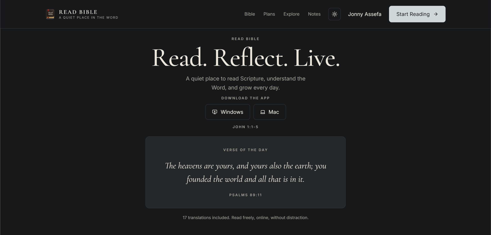
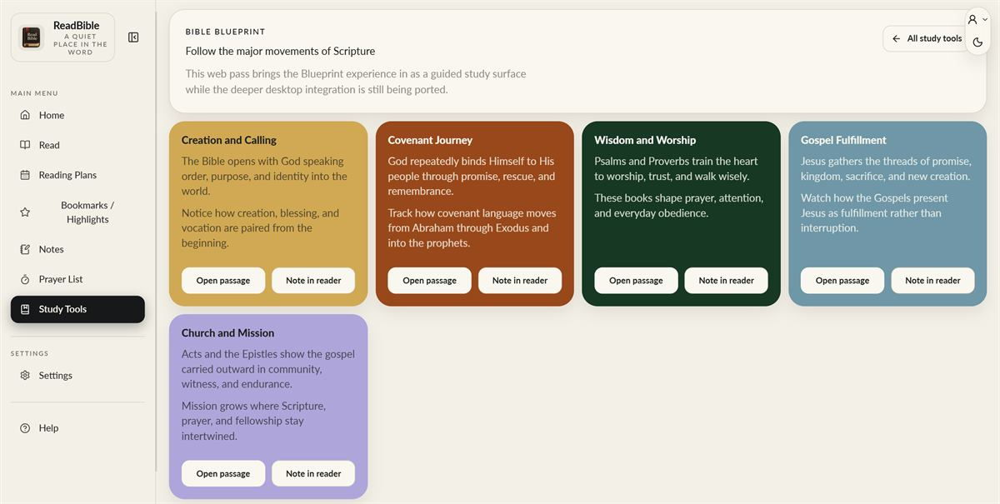
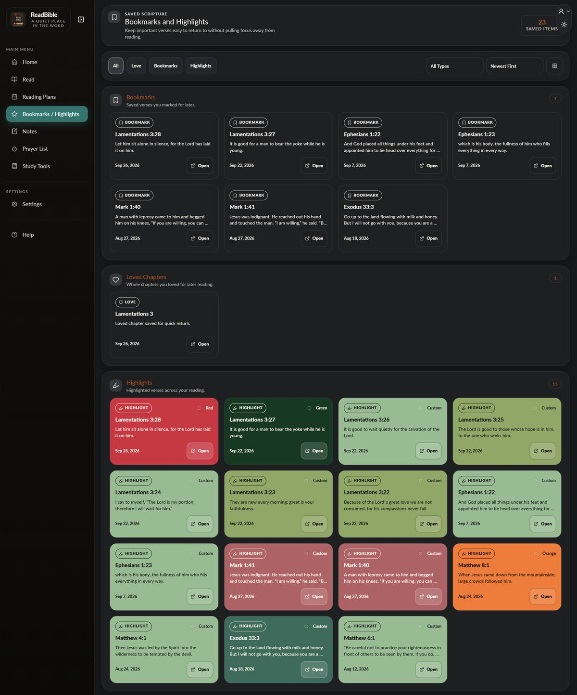
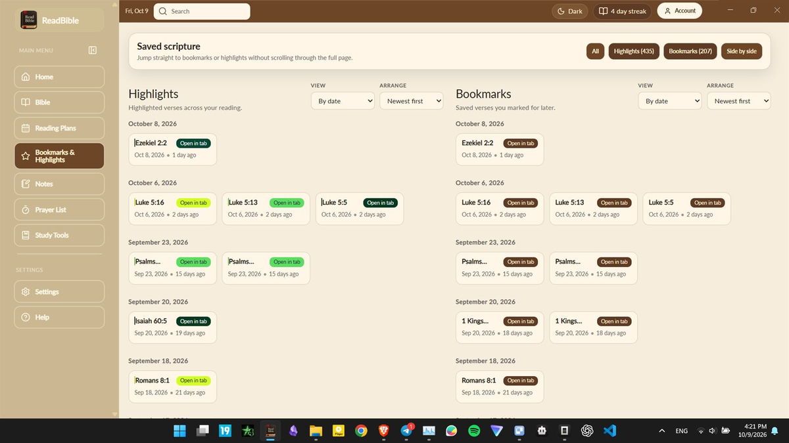
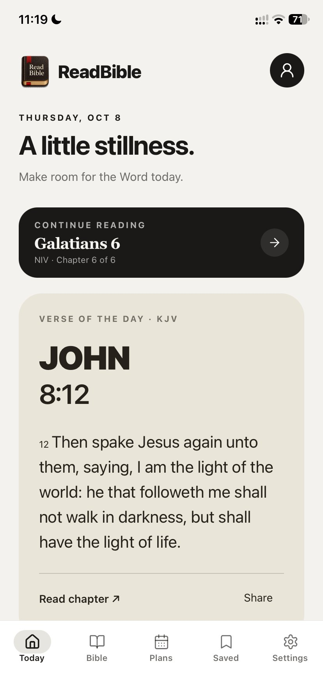

A Bible reader that had to feel like a quiet place in the word — not a database with verses inside it. Reading, plans, saved passages and prayer designed as one calm habit, on every device the reader owns.
ReadBible
The challengeReading, study, saved passages, and prayer needed to live together without turning the scripture view into a crowded dashboard.

From the first question to the finished system.
A reading app on three surfaces — a web reader, a desktop app and an iPhone app — with the verse of the day, reading plans, a Bible reader, bookmarks, highlights, notes, a prayer list, study tools and settings, in light and dark themes, plus a reading streak.
The system behind the screen.
Reading is the anchor, and each supporting tool is placed according to how it is used. On a phone, the day’s reading and thumb-ready navigation come first. On desktop, a persistent sidebar keeps study tools close without narrowing the text. Saved passages and notes reconnect to the reader, so the app supports a routine instead of fragmenting it.
The tensions to resolve
- Keeping study tools close without letting them crowd the reading view.
- One system across three postures — a phone in one hand, a desktop window, a browser tab.
- Making saved scripture scannable once highlights and bookmarks run into the hundreds.
Why the interface works this way.
Start with today’s reading
The phone opens on the verse of the day, with the core destinations reachable by thumb so the reader can begin without navigating a menu.
Give study its own space
The Bible Blueprint has a dedicated surface for exploring scripture, with passages and notes linked back to the reading view.
Make saved passages retrievable
Bookmarks and highlights share one saved view, and desktop readers can open a passage alongside the current text.
Keep the reading surface calm
A light theme and dark alternative support longer sessions while preserving the same hierarchy across both.
What became easier.
A reading habit with a home on every device — the same app on the phone at night, the desktop in the morning, and the web wherever a browser is open.
3platforms — web, desktop and phone
5tabs in the phone app
9sections in the desktop sidebar
5movements in the Bible Blueprint



App UI/UX Design
A quiet reading system in both themes: the day’s passage stays central, with saved scripture, the library, and plans within thumb reach.

Start with the thing that feels stuck.
Tell me who the experience is for, what is getting in their way, and what needs to become easier. I’ll reply within one working day with a useful next step and a written scope before work begins.
- yohannesassefa17@gmail.com
- +251 92 124 4796
- Addis Ababa, Ethiopia · GMT+3